OpenAI x Hardware • Concept 2025
The future of AI & hardware
Role
Product Designer
Timeline
August - September 2025
Team
3 Designers
Skills
Product Design
Product Strategy
Prototyping
Overview
What should OpenAI build as their first AI device?
As a team of 3 product designers, our goal was to land on a clear vision within 7 weeks.
Product Strategy
Thinking broadly about OpenAI, the AI landscape, and exploring widely in the solution space.
Prototyping & Testing
Going wide in ideation and rapidly testing concepts with users.
Iterating with Feedback
Continuously iterating on concepts and validating product decisions.
Problem
ChatGPT is at the top of the of the stack.
ChatGPT is an app, at the top of this technology stack. That’s a risky place to be because it means leaves OpenAI at the mercy of the lower layers, like the platform, the operating system, and the hardware.
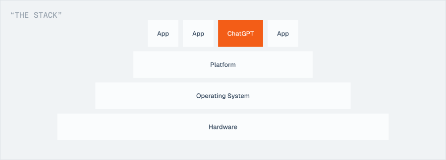
Apple and Google are building their own consumer AI ecosystems, but with the advantage of being able to control the entire stack.
However, OpenAI is currently dominating consumer AI, and Apple has recently dropped the ball on their Apple Intelligence integrations. This creates an opportunity for OpenAI to build an AI device and capture consumers in their own ecosystem.
Opportunity
Memory as the core of OpenAI’s device ecosystem.
Memory should be OpenAI’s new moat. LLMs are becoming commoditized, but personalization and context are the new differentiators. With hardware, OpenAI will benefit from:
Independence
No longer at the mercy of the lower layers
Ecosystem lock-in
Capture users with a tightly-integrated experience like Apple does today
New input modalities
A device that can see, hear, and remember in ways an app can't
Solution
Tomo: the AI device that remembers so you don’t have to...
A pin and pendant wearable, serving as a camera and microphone on-the-go.
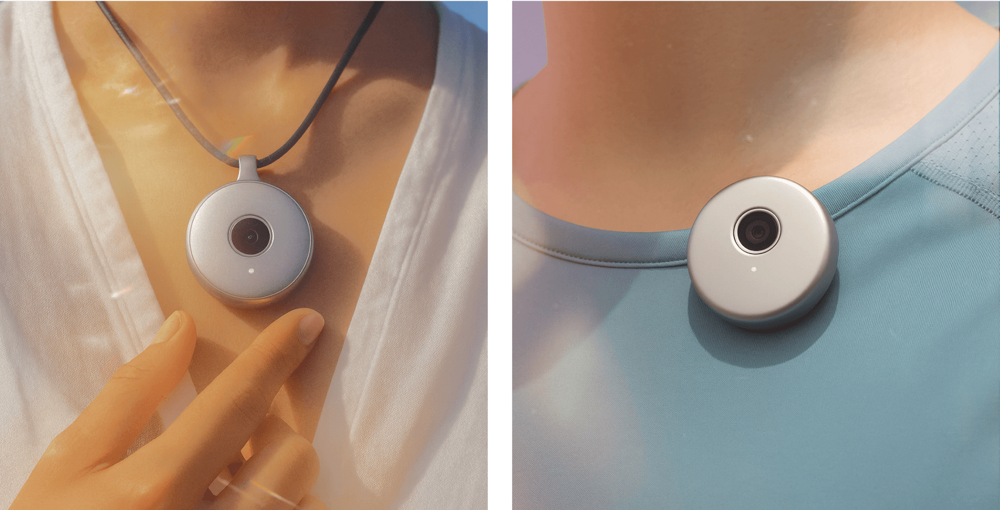
...powering Moments, logging memories in your everyday life in ChatGPT.
Moments is a new atomic unit in ChatGPT, logging all the events, conversations, and solo adventures captured with Tomo.
Core Flows
Smart prompts, in-the-moment
Get prompts relevant to you in-the-moment, with Tomo.
Smart prompts, in-the-moment
Get prompts relevant to you in-the-moment, with Tomo.
Chat with real-time context
ChatGPT can now respond to you with understanding of your real life.
Chat with real-time context
ChatGPT can now respond to you with understanding of your real life.
Look back on your moments
In the new Moments page, you can look back on everything that’s happened, catagorized by context.
Look back on your moments
In the new Moments page, you can look back on everything that’s happened, catagorized by context.
Review a specific moment
Tap into each moment to see all the important things that happened.
Review a specific moment
Tap into each moment to see all the important things that happened.
Onboarding to Tomo
Designing for an experience that will show users how Moments work and the immediate value of Tomo.
Research
Researching the AI landscape and current devices on the market
We went deep into understanding OpenAI, and the world of consumer AI, agents, trends, and more. We researched existing devices and tried some out ourselves!
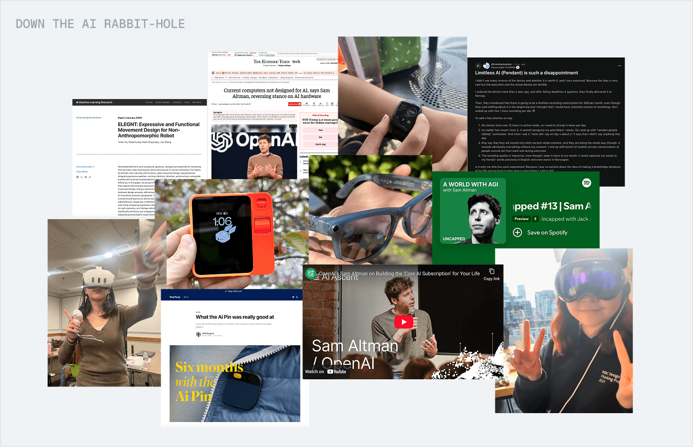
Exploring Form Factors
Exploring product direction and form factor
We explored product direction and form factor, and designed for an experience that will show users how Moments work and the immediate value of Tomo.
Strategic Directions
Productivity Tools
Targeting students, massive AI adopters, with a familiar form factor.
Home Devices
A less competitive space with fewer constraints on battery life and data plans.
Wearables
On-the-go form factors fit for mass adoption.
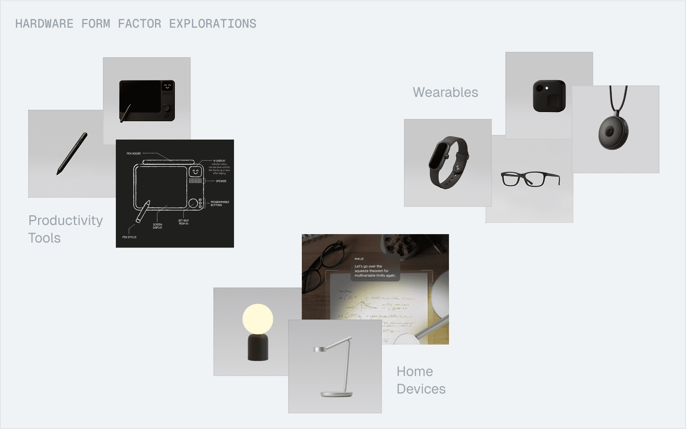
Why Tomo?
Enhances ChatGPT
Leverages the app’s large and fast-growing user base.
Leverages OpenAI’s strengths
Taps into OpenAI’s unique strengths of strong foundational models, memory, and agents.
Easier to scale
Much cheaper to build and easier to scale than glasses, watches etc.
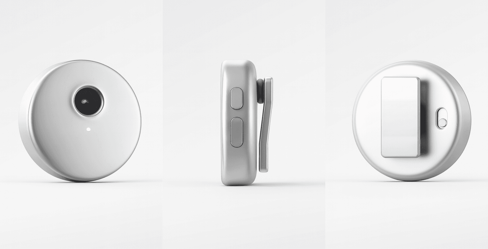
Prototyping and Testing
Prototyping interfaces for real-world memory
We explored a ton of concepts for these 3 strategic directions, here are select few of them:
ChatGPT Feature Power-ups
Using real-life context to enhance existing features in the app
In-the-moment Canvas
Exploring interfaces focused on real-time assistance
Memory-centered UI
Focusing on helping users look back on their day
Testing and iterating with feedback!
We got users to try these prototypes, observed how they used them, how they felt, and got tons of valuable feedback.
Key User Insights
Memory for recall, not reliving
People want to look back and remembering important things, rather than re-experiencing them.
Surface relevant suggestions
Users want personalized prompts, reminders, and tasks—both in the moment and as a recap at the end of their day.
Design Decisions
We identified the most intuitive way to bring this feature to life.
With insights and iteration from prototyping and testing, we got to thinking how a clear, intuitive solution could be integrated within the existing ChatGPT ecosystem.
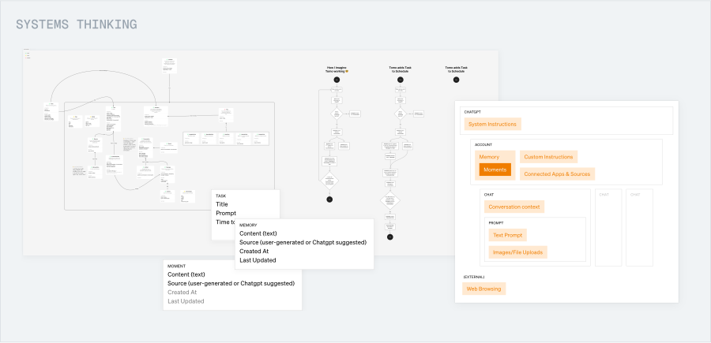
Where we landed
Insight 1: Memory for recall, not reliving
Moments as chat context
People want to look back and remembering important things, rather than re-experiencing them.
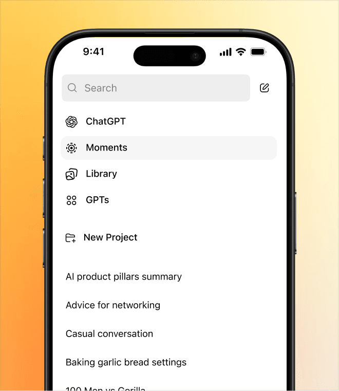
Moments log as a new page
Users want personalized prompts, reminders, and tasks—both in the moment and as a recap at the end of their day.
Insight 2: Surface relevant suggestions
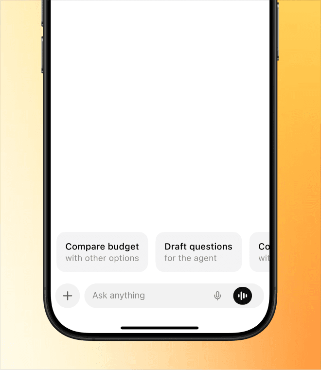
Smart prompts in-the-moment
We want to give users relevant prompts with real-time context, in a less invasive way than our initial exploration.
Smart Prompts for every moment
With prompts for every moment, users can look back on their day and get smart suggestions.
Designing for Hardware Constraints
A device that is light-weight and always-recording isn’t possible, yet.
We researched a bunch of products and found that high-quality camera recording doesn’t last more than a few hours.
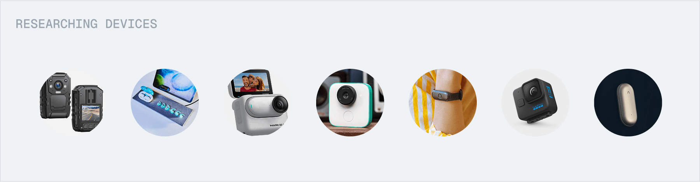
So we had to ask:
How do we maximize memory despite constraints of camera battery life?
Constraining the experience
Context-based Capture
In this case, Tomo would use real-time cues to choose when to record, balancing battery with context capture.
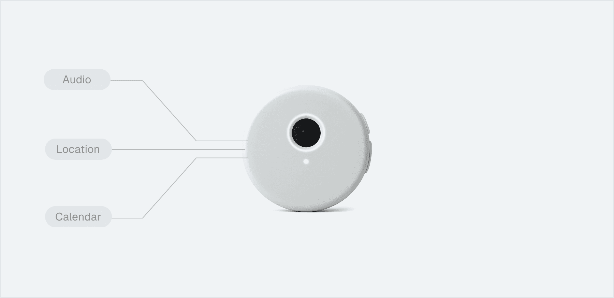
Considerations
How do we communicate rationale for recording?
We could use a notification to let users know why Tomo is recording.
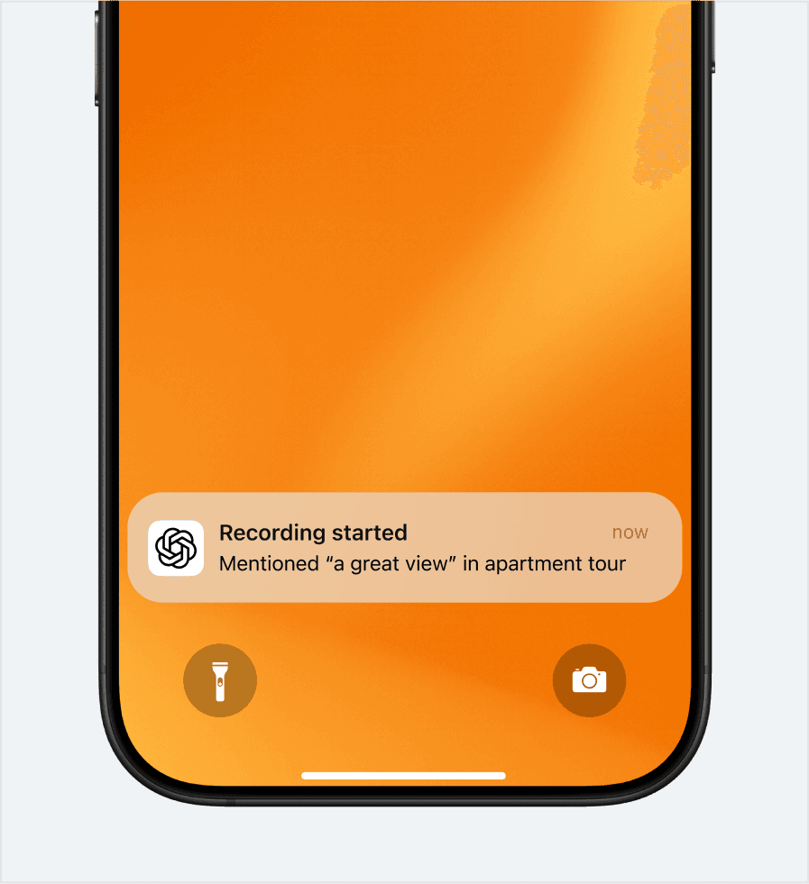
How do we communicate rationale for recording?
We could use a notification to let users know why Tomo is recording.
Can AI detect when to record?
We found that with transcripts alone, AI is pretty good at identifying moments worth recording.
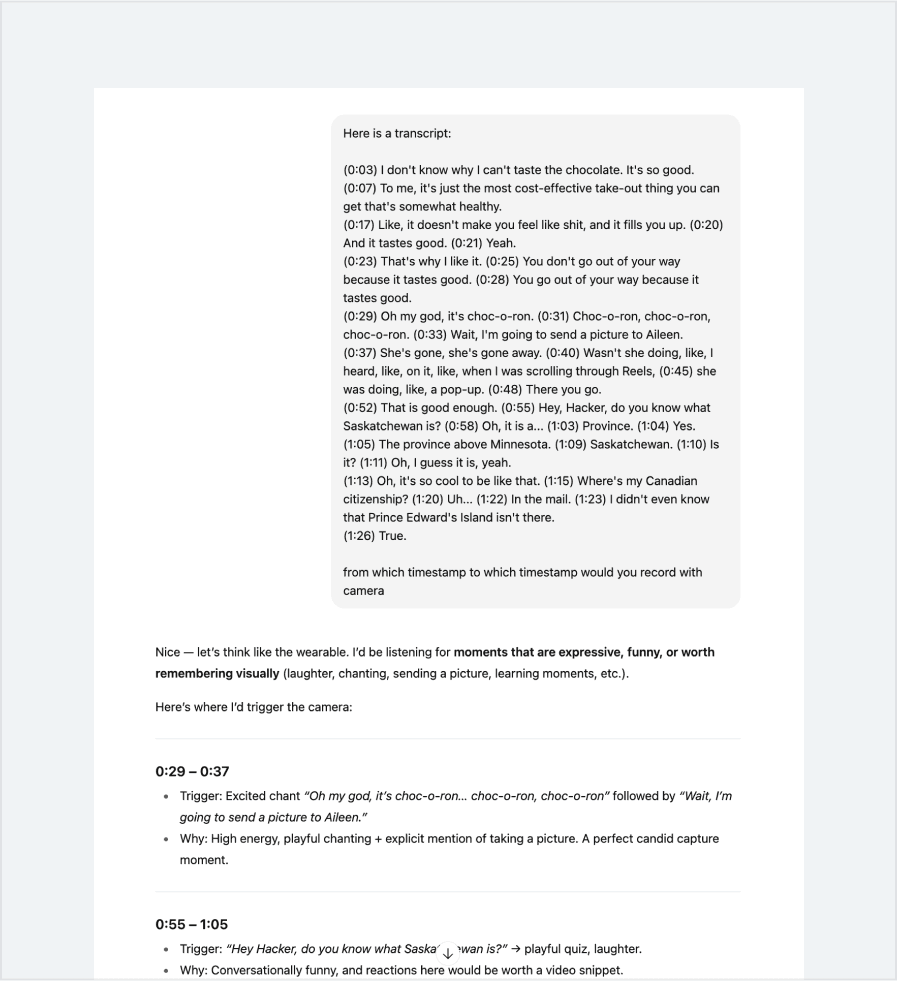
Can AI detect when to record?
We found that with transcripts alone, AI is pretty good at identifying moments worth recording.
Manual Capture
In this case, the user is always manually pressing or holding down the button to capture images and videos.
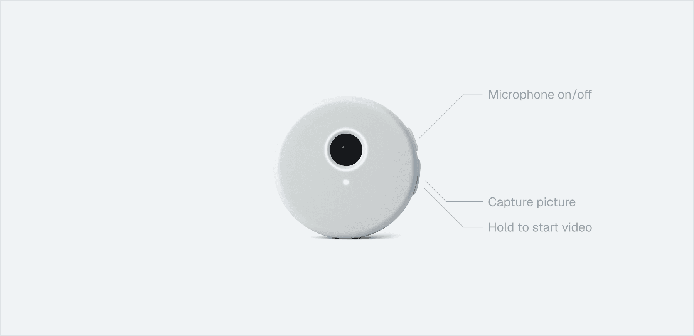
Considerations
How do we remind users to record?
We could have a subtle on-device indicator to remind users to record at specific moments with non-visual cues.
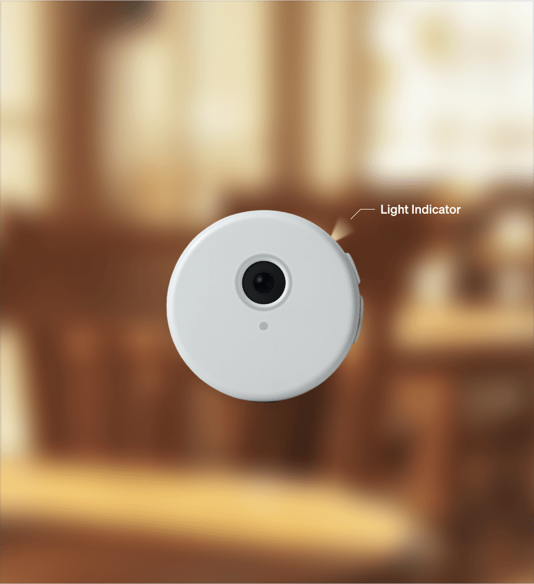
How do we remind users to record?
We could have a subtle on-device indicator to remind users to record at specific moments with non-visual cues.
What does a less visual interface look like?
We could use icons to represent moments without visual captures, and pull context from other sources, like LinkedIn headshots for coffee chats.
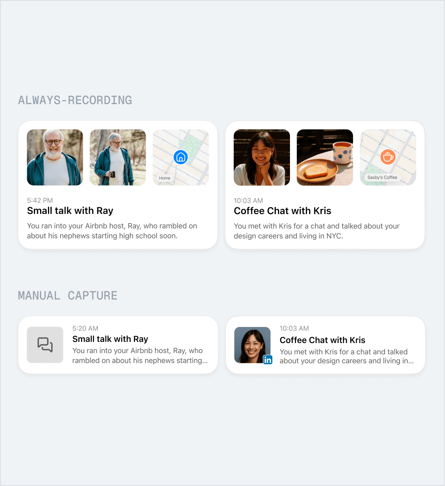
What does a less visual interface look like?
We could use icons to represent moments without visual captures, and pull context from other sources, like LinkedIn headshots for coffee chats.
How do we deal with imperfect captures?
We can use AI to enhance captures, like making shots more flattering, or making blurry photos clearer.
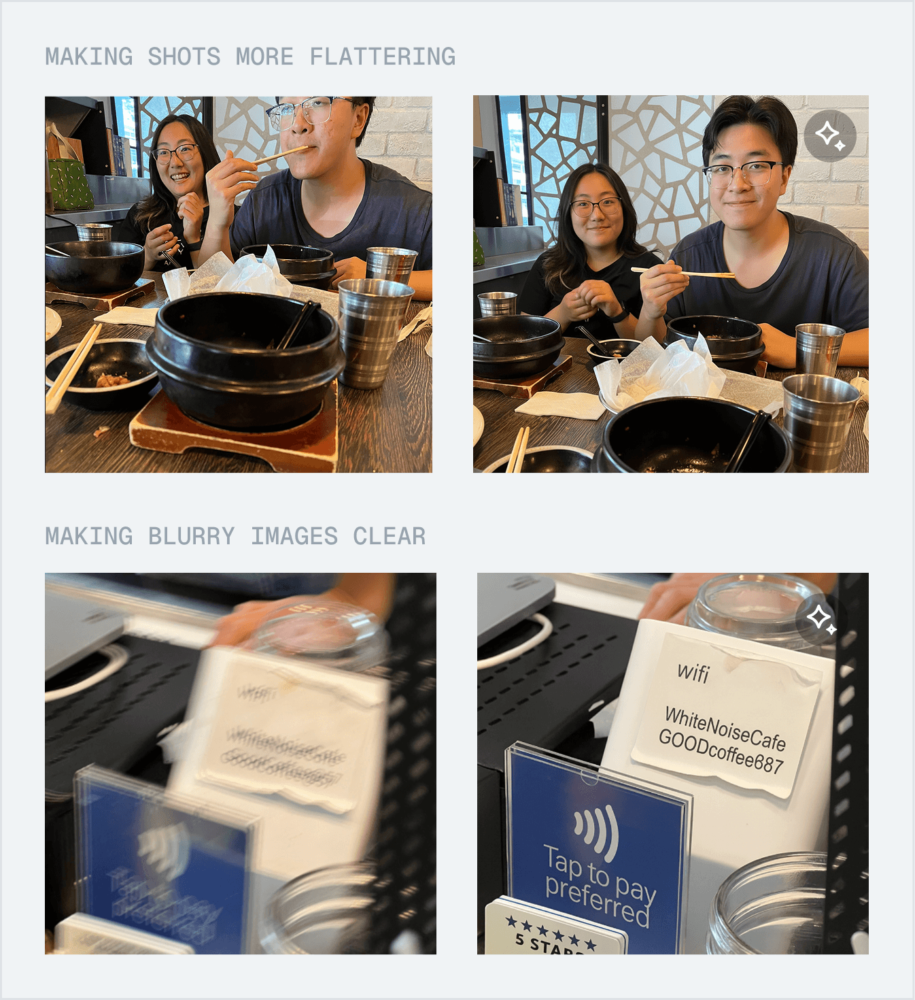
How do we deal with imperfect captures?
We can use AI to enhance captures, like making shots more flattering, or making blurry photos clearer.
Trading memory for privacy
With manual capture, we’re making this tradeoff of less memory captured for more user privacy. This is something we should lean into as a strength. Privacy really matters to users, and we want to make it a deliberate design decision that helps us gain trust with users and lowers the barrier to entry of using a product like this.
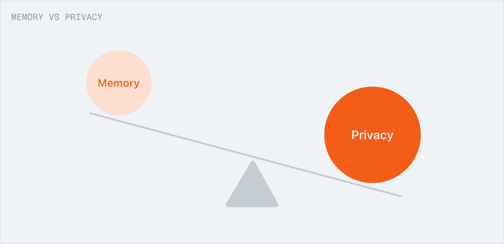
This is a trade-off that we're willing to make for mass adoption.
Reflection
What I learned
Social signals matter.
We can't design just for the user, but also for those who will be around them and perceive them. What does Tomo imply for social settings? How can we design hardware for self-expression?
Think in systems.
It's not just about designing an amazing feature, but how it fits into the existing system, and how it fits into users' mental models.